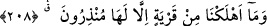
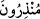
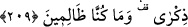

sevgileriyle lezzetlenen ve alışkanlıklarına teslîm olandır.”
Harun Reşîd, bir adamı hapsetmişti. Adam başındaki görevliye şöyle dedi:
“Mü’minlerin emîrine söyle! Senin nimet içinde geçirdiğin her gün benim sıkıntımı
azaltmaktadır. İş yakın, buluşma yeri sırat, hâkim ise Allah’tır.” Bu sözü duyan Harûn
Reşîd bayıldı. Sonra ayıldı ve adamın serbest bırakılmasını emretti.
208. Bununla birlikte hangi memleketi helak ettikse muhakkak onu uyarıcı
(peygamberleri) olmuştur.
“Bununla birlikte” helâk olan memleketlerden “hangi memleketi helak ettikse
muhakkak onu uyarıcı” o memleketin halkını uyarmış olan “(peygamberleri)
olmuştur.”
Keşfü’l-esrâr’da der ki: “
(uyarıcılar)” kelimesi çoğul olarak kullanıldı. Çünkü
onlardan maksad, peygamber ve ona tabi olan yardımcılarıdır.”
209. (Onlar) ihtar edilmiştir ve biz zâlim değiliz.
Onlar hatırlatmak, öğüt vermek ve delil ile susturmak için “ihtar edilmiştir ve biz
zâlim değiliz” ki zâlimlerden başkasını helâk edelim.
Ehl-i sünnete göre Allah’ın onları uyarmadan önce helâk etmesi asla bir zulüm
değildir. Bununla birlikte Allah’ın zâlim olmaması ile birlikte bu konunun ifâde
edilmesi, O’ndan zulmün meydana gelmesinin imkansız olduğu tasvir edilerek O’nun
bundan tamamen uzak olduğunu beyan etmek içindir.
et-Te’vîlâtü’n-Necmiyye’de der ki: “Bununla birlikte hangi memleketi” yani
memleket halkını “helak ettikse muhakkak onu” rabbânî ilhamlarla “uyarıcılar
olmuştur.” Memleket insanın cesedidir. Onun halkı ise kalb ve ruhtur. Onların helâk
edilmesi emredilen şeyleri terk etmek ve yasaklanan şeyleri yapmak sûretiyle onların
fıtrî istîdâdının bozulmasıyladır. “(Onlar) ihtar edilmiştir” yani Rableri tarafından
uyarılmışlardır. Nitekim Allah Teâlâ “Nefse ve ona birtakım kabiliyetler verene,
sonra da ona iyilik ve kötülükleri ilham edene yemin ederim” (eş-Şems, 91/7-8)
buyurur. “Ve biz” azâbı kendi yerinden başkasına, rahmeti de kendi yerinden başkasına
koymak sûretiyle “zâlim değiliz.”